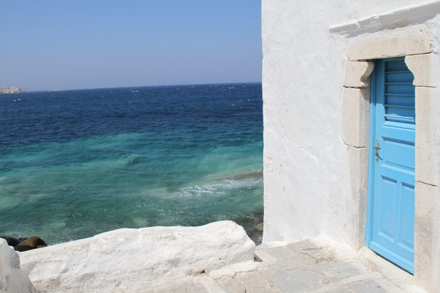

The Best Of All Possible Worlds
I took this photo in Mykonos, my least favorite of the Greek Isles, if I had to rank them. Too crowded, and too culturally manipulated for tourists. However, there are still spots where everything comes together perfectly and your eyes tell your brain that this is a special place. These are the places that remind you wonder is in everything. Just see it.
I also enjoy baking desserts, triathlons, and scuba diving. When I read it's usually fantasy or science fiction with the occasional break to read a philosopher. I am still in love with Voltaire and HP Lovecraft. Probably says a lot about me right there.
I have worked in a lot of different industries, but always doing the same thing: Building and running the technology, forming a team, inserting solutions and automation to keep costs down and reliability up. I've learned that scalability is an environmental factor like Oxygen or Income. So is security. These aren't features, they are requirements that too many overlook or consider to be something to "do later."
I am self-taught, and when I look back on what I've built and the successful companies with a ton of employees that may not exist otherwise: I feel very proud of my work. I look forward to tomorrow, when I can do more of it.